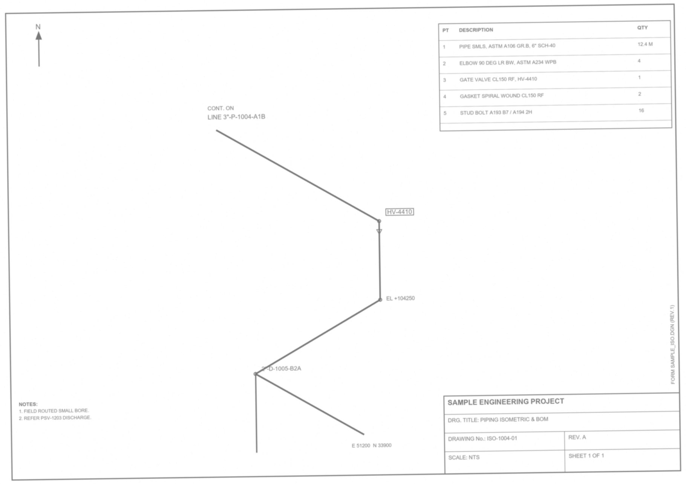
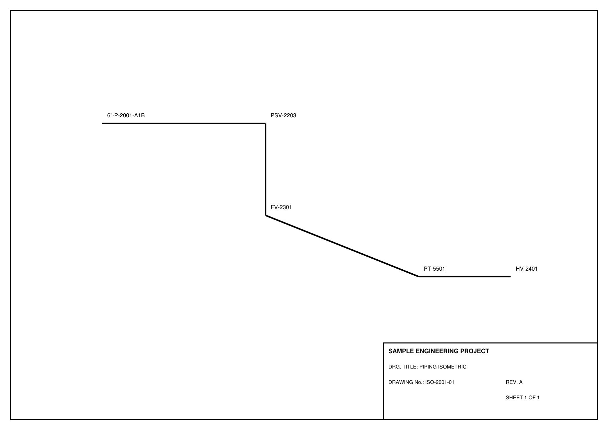
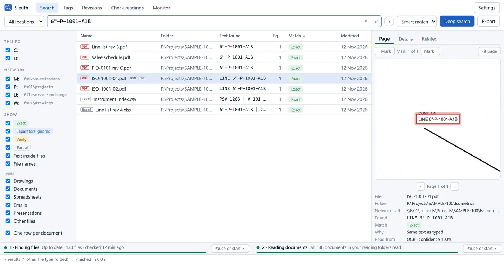

Sleuth finds any tag in scanned drawings. For example: 6"-P-1001-A1BFound on ISO‑1001‑01, zone B3.
Sleuth reads the scans nobody indexed: isometrics, P&IDs, plotted PDFs on every office drive. Type a line number and it opens the sheet with the tag ringed in red, and tells you why it matched.
Type a tag. Watch it get ringed.
This runs Sleuth's own matching rules in your browser, on the text Sleuth read from seven sample documents: four scans and three PDFs with a text layer. Try another spelling, or leave out the dashes.
The sample drawings were made for this page, and the folder names are examples. In the app the same search runs over every drawing read on your PC and in the office cache.
It matches the tag, not the way it was typed.
Isometrics put an inch mark in the line number, line lists drop it, file names drop everything, and scanners read 0 as O. Sleuth compares letters and digits, folds look-alikes, and says which rule it used. A look-alike is never reported as exact, and a match must stand on its own: PSV-120 inside PSV-1203 is only partial.
| As written | Where | Status |
|---|---|---|
| 6"-P-1001-A1B | Isometric, OCR | Exact |
| 6-P-1001-A1B | Line list, PDF text | Sep. ignored |
| 6 P 1001 A1B | Typed with spaces | Sep. ignored |
| 6P1001A1B.pdf | File name | Sep. ignored |
| 6"-P-1OO1-A1B | Faint scan, letter O for 0 | Verify |
| ··-P-1001-A1B | A pipe crosses the size; only part read | Partial |
| 16"-P-1001-A1B | Another line: 16 inch, not 6 | Partial |
A site scan you can hardly read. Sleuth reads it, mistakes and all.
A faded, streaked scan of an isometric, read by the real Sleuth reader. Sleuth doesn't clean up the image; it reads it. Drag the line: the right side shows every line it found, boxed, with its real confidence. Below is the full reading, including where it went wrong. Anything under 80% is marked Verify and is never reported as exact.

| What Sleuth read, top to bottom | Confidence | Status |
|---|
Rev A to rev B: what actually changed.
Sleuth groups drawings by the drawing number in their title block and compares the tags of two issues. This is the real comparison of two sample revisions. Pick a change to see it on both sheets. A difference that could be an OCR misreading is marked Verify, never reported as an engineering change.

| Change | Kind | Old reading | New reading | Why |
|---|
Don't know which drive? Search all of them at once.
Each file server gets a few searchers of its own, so a slow share never holds up the rest. A share that doesn't answer is marked offline within four seconds. A folder that hangs is skipped and listed with the reason. PDFs found on the way that haven't been read yet are read straight away, and their results join the list.
Checked like a drawing. Click the numbers.
The real Sleuth window, searching the sample sheets. Each number is a checker's note on that part of the window.

- 1Search box. Results update as you type. Ctrl+F from anywhere.
- 2How it matched. Exact, Separators ignored, or Verify.
- 3Which drives. Tick the drives to search, and the folders Sleuth reads.
- 4The proof. The page, with the tag ringed in red. Step mark to mark.
- 5Where it was read. OCR or PDF text, with the reader's confidence.
- 6Deep search. Walks every drive live when you don't know where to look.
What the other searches can't see.
Windows search and Everything are good at file names. Drawings hide their tags inside the page.
| Can it… | Windows search | Everything | Sleuth |
|---|---|---|---|
| Find files by name on local disks | Yes | Yes, instantly | Yes |
| Search mapped network drives | If the server indexes them | By scanning folders | Yes, offline shares skipped |
| Find text in PDFs that carry text | With a PDF filter installed | At search time, slowly | Yes, read in advance |
| Find text in scanned drawings | No | No | Yes, OCR |
| Match 6"-P-1001 to 6P1001 | No | No | Yes, and labelled |
| Open the page with the tag marked | No | No | Yes |
| Say why each file matched | No | No | Yes, in words |
| List every tag and compare revisions | No | No | Yes |
What's in the box.
| PT | Description | Qty | Remarks |
|---|---|---|---|
| 1 | Search window | 1 | About 150 MB. Results as you type. |
| 2 | Background reader | 1 | Low priority. Pauses above 60% CPU and on battery. Frees its memory after 2 idle minutes. |
| 3 | Page classifier | 1 | Plotted text, scan, text + scan, outlined text, damaged. OCR only where a page needs it. |
| 4 | OCR engine, PP-OCRv6 | 1 | 300 dpi, 1600 px tiles, 512 px overlap. CPU, or DirectML only if it reads a check picture exactly like the CPU and faster. |
| 5 | Second reader, Windows OCR | 1 | Re-reads lines under 85% confidence. A disagreement is marked Verify. |
| 6 | Tag and title-block rules | 1 set | Line numbers, instruments, valves, equipment; drawing number, revision, title. Each value keeps the text it came from. |
| 7 | Local index | 1 | SQLite with trigram search. Folder limits applied before result limits. |
| 8 | Shared reading cache | 1 | Keyed by content and reading pipeline, checksummed. Each drawing read once for the office. |
| 9 | Office server | Optional | Same engine over shared folders. HTTPS, access keys, per-project permissions, audit log. |
| 10 | Updater | 1 | Checks the SHA-256 before installing. Rolls back to the previous release. Keeps settings and index. |
Nothing leaves the office.
- Drawings are read on your own PC. Sleuth never changes, moves or uploads a file.
- Read results stay on your PC and in the office's shared cache folder, on our own server.
- The only internet traffic is a check on GitHub for a new version.
- No AI: no language models, no chat, nothing sent to an AI service, nothing learned from your corrections. OCR uses fixed models whose fingerprint is recorded with every reading.
- Files Sleuth can't read are listed with the reason: password protected, damaged or no access. None are skipped silently.
- Uninstalling removes the program. Your settings and index stay until you delete them.
Questions, answered.
RFI-001Windows says it "protected your PC". Is that safe?CLOSED
RFI-002Will it slow my PC down while I'm drafting?CLOSED
RFI-003How long before my project is searchable?CLOSED
RFI-004How sure is "found"?CLOSED
RFI-005What if a drive is offline or a folder is locked?CLOSED
RFI-006Does it search DWG or Word files?CLOSED
RFI-007Does Sleuth use AI?CLOSED
RFI-008Do we need a server?CLOSED
RFI-009Will it use my graphics card?CLOSED
Issued for use.
- Download the installer and run it. It installs for your account only; no admin rights are needed.
- On the first install only, click More info → Run anyway if Windows asks.
- Sleuth connects to the shared cache at U:\Sleuth-cache. If it can't, it shows you what to fix.
- Add your project folders under Folders being read. Search straight away. Updating from 0.1 keeps your settings and everything already read.
- Keep the guide by your desk. Its last page is a one-page quick reference.